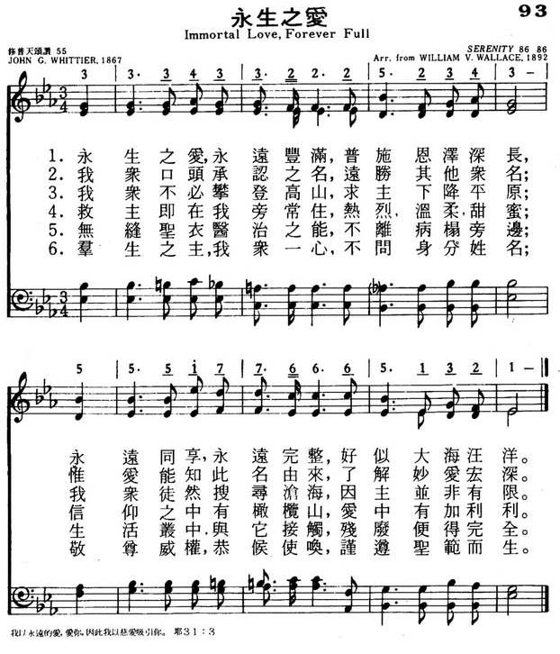
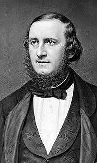

|
|
|
|
1 Immortal Love for ever full, 2 Our outward lips confess the name 3 We may not climb the heavenly steeps 4 But warm, sweet, tender, even yet 5 The healing of his seamless dress 6 Through him the first fond prayers are said 7 Alone, O Love ineffable,
|
093永生之爱歌
1.永生之爱,永远丰满,普施恩泽深长
永远同享,永远完整,好似大海汪洋 2.我众口头承认之名,远胜其他众名 惟爱能知此名由来,了解妙爱宏深 3.我众不必攀登高山,求主下降平原 我众徒然搜寻沧海,因主并非有限 4.救主即在我旁常住,热烈温柔甜蜜 信仰之中有橄榄山,爱中有加利利 5.群生之主,吾众一心,不问身份姓名 敬尊威权,恭候使唤,谨遵圣范而生 |
|
https://www.mred365.cn/szxg/7096.html
 https://hymnary.org/hymn/BH1991/page/426 Immortal Love, Forever Full
|
|
|
|
|


https://www.youtube.com/watch?v=eMLvVYFxCT0 -
https://www.youtube.com/watch?v=soV3YSaM4yc -
https://www.youtube.com/watch?v=VXoVvxHmqtU
LX1812
Immortal Love, Forever
Full
093永生之爱歌
颂新
| Text: | Immortal Love, Forever Full |
| Author: | John Greenleaf Whittier |
| Tune: | SERENITY |
| Composer: | William V. Wallace |
| Short Name: | John Greenleaf Whittier |
| Full Name: | Whittier, John Greenleaf, 1807-1892 |
| Birth Year: | 1807 |
| Death Year: | 1892 |
Whittier, John Greenleaf,

the American Quaker
poet, was born at Haverhill, Massachusetts, Dec. 17, 1807. He began life as
a farm-boy and shoemaker, and subsequently became a successful journalist,
editor and poet. In 1828 he became editor of the American
Manufacturer (Boston), in 1830 of the New
England Review, and an 1836 (on becoming Secretary to the American
Anti-Slavery Society) of the Pennsylvania Freeman. He
was also for some time, beginning with 1847, the corresponding editor of the National
Era. In 1840 he removed to Amesbury, Massachusetts, where most of his
later works have been written. At the present time [1890] he lives
alternately at Amesbury and Boston. His first poetical piece was printed in
the Newburyport Free Press in 1824. Since
then his publications have been numerous, including:—
Voices of Freedom, 1833; Songs of Labour, and
other Poems, 1850; Ballads and other Poems,
London, 1844; The Panorama, and other Poems, 1856; In
War Time, 1863; Occasional Poems, 1865; Poetical
Works, 1869; Complete Poetical Works, 1876; The
Bay of the Seven Islands, and other Poems, 1883, &c.
From his numerous poems the following hymns have been compiled, and have come into common use, more especially amongst the American Unitarians:—
Tune Information
| Title: | SERENITY (Wallace) |
| Composer: | William Vincent Wallace (1856) |
| Meter: | 8.6.8.6 |
| Incipit: | 33343 32225 23435 |
| Key: | E♭ Major |
| Copyright: | Public Domain |

William V. Wallace
1812–1865
简介（一） （来源：《赞美诗新编史话》）
永生之爱歌 Immortal Love，forever full
经文：“从远方耶和华向以色列显现，说：‘我以永远的爱爱你，因此我以慈爱吸引你” (耶31：3)。
这是从美国著名诗人、散文作家、废奴运动的旗手惠蒂尔长达三十八节的诗《我们的主》中选出。原诗发表于 1867年所出版的波士顿公理会杂志。《普天颂赞》第55首还选了下列两节 ：
无缝圣衣医治之能，不离病榻旁边；
生活丛中与他接触，残废便得安全。
儿时柔唇可爱初祷，开口奉主圣名；
生活将完最后微声，依然呼吁主名。
惠蒂尔 (J．G.Whittier，1807— 1892)出生于美国麻省一个穷苦农民家庭。幼年时家贫，无力就学，在农场种地，直到他20岁时。他在父母、敬虔的公谊会 (弟兄会)信徒的带领下，熟读圣经成为他一生事业和道德的指导，也为他自学成才立下基础。少年时很爱读苏格兰诗人彭斯(Burns)的诗，尤喜爱彭斯所描写的田园景色。受了薰陶的惠蒂尔也就自己动笔写诗，由他姐姐代为投寄给杂志。一天，正当这个19岁的青年在修筑土墙时，忽然邮递员送来一份杂志；出乎他意料之外的是，他的处女作已经在杂志上发表了。不久，那位主编亲自来访，鼓励他继续写作，并征得他父亲同意，送他进学校学习。但由于要支付昂贵的学宿费用时感困难，他就自学缝纫技术，半工半读才完成学业。从此他的作品常在印刷机上旋转，并在不久后就得到新闻记者的位置。当时释放黑奴运动正在勃兴，惠蒂尔与斯托夫人 (《新编》第147首《小鸟啼明歌》的作者)都是以笔杆子为废奴制造舆论的积极分子。其生平著作颇多，最重要的有《美国废奴时期诗歌集》、《自由的呼声》、《内战时期及其他》等抨击蓄奴制度，同情黑人悲惨遭遇的书籍。他任编辑的《宾夕法尼亚自由人》报社，曾被主张蓄奴的人烧毁，但他仍努力致力于释放黑奴运动。他的秃笔胜似百万雄师，因此，释放黑人得到胜利，有他一份功劳。他还著有长诗《雪封》、《劳动之歌》等，作为文学上的珍品被选入英文文选，是学习英语的好教材。从惠蒂尔的诗集中被选作为圣诗的有好几首。《新编》中还有198、357两首。
惠蒂尔大部分的作品，都是50多岁以后写的。他曾将乐圣贝多芬所写的曲调编写过一些赞美诗。他赞美诗写得不多，大部分是从他长诗中选出几节而改编成的。他晚年在制鞋工人中进行过教育工作，也参加过制鞋工作。 1892年他死于新罕普什尔。人们称他为“贵格诗人”。
曲谱调名为《平静 (SERENITY)》，是华莱士 (W．V ．Wallace，1812-1865)改编的。他生于爱尔兰，随父母移居澳大利亚。他自幼就有音乐天赋，且是一位技巧精湛的小提琴家，在澳大利亚各处演出时甚受欢迎，甚至有的听众曾送给他 100只羊作为报酬。他写过一些歌剧，晚年曾到美国访问演出，以后又去英国， 1865年在英国去世。
https://www.xueshengshi.com/?p=5593
"IMMORTAL LOVE, FOREVER FULL" hymnstudiesblog
"Who shall separate us from the love of Christ?…" (Rom. 8.35)
INTRO.:
A song which emphasizes the everlasting love of Christ which offers us salvation from sin and the hope of eternal life is "Immortal Love, Forever Full." The text was written by John Greenleaf Whittier (1807-1892). Known as "the Quaker Poet," he penned these words as part of a larger poem of 38 stanzas entitled "Our Master" in 1866. It was first published in his Tent on the Beach and Other Poems in 1867. Several arrangements of stanzas from this poem have been used as hymns by various hymnbook editors at different times.
Among hymnbooks published by members of the Lord’s church during the twentieth century for use in churches of Christ, this song was included in several older ones and is still found in some of the newer ones. The 1925 edition of the 1921 Great Songs of the Church (No. 1) had five stanzas of Whittier’s poem (#’s 1, 5, 13, 14, and 15) with a tune by the editor, Elmer L. Jorgenson (1886-1968); and this same version was used in the 1937 Great Songs of the Church No. 2, also edited by Jorgenson. Today, it is found in the 1971 Songs of the Church, the 1990 Songs of the Church 21st C. Ed., and the 1994 Songs of Faith and Praise all edited by Alton H. Howard; in addition to the 2007 Sacred Songs of the Church edited by William D. Jeffcoat.
The same basic text, with a tune (Serenity) composed in 1856 by William V. Wallace (1814-1865) and arranged in 1878 by Uzziah C. Burnap (1834-1900), is found in the 1986 Great Songs Revised edited by Forrest M. McCann, and the 1992 Praise for the Lord edited by John P. Wiegand. It is interesting that the 1948 Christian Hymns No. 2 and the 1966 Christian Hymns No. 3, both edited by L. O. Sanderson, used both the Jorgenson tune, and beginning with the stanza, "We May Not Climb the Heavenly Steeps," the Wallace tune. There are enough stanzas to use both tunes and make two different hymns.
This hymn pictures the love of Christ in several ways.
I. To begin, Christ’s love is presented as "a never ebbing sea"
"Immortal love, for ever full, for ever flowing free,
For ever shared, for ever whole, A never-ebbing sea!"
A. The word "immortal" means not subject to death: 1 Tim. 1.17; this is
certainly an accurate description of Christ’s love
B. Because Christ’s love is immortal, it is "forever full, forever flowing
free": Rom. 5.16-21; Christ’s love is not the payment of a debt,
but a free gift for our salvation
C. Therefore, it is "a never-ebbing sea": Psa. 104.24-25. The word "sea" here
stands for all the oceans of the earth. Just as great and wide as this sea is,
so is Christ’s love for us.
II. Next, Christ’s love is portrayed as something within us
"Our outward lips confess the name All other names above;
Love only knoweth whence it came, And comprehendeth love."
A. We must confess with our outward lips the name of Christ: Rom. 10.9-10
B. This is because His name is above all other names: Phil. 2.9-11
C. However, it is only by love in our hearts that we can comprehend the width,
length, breadth, and height: Eph. 3.17-19
III. Again, Christ’s love is described as a healing
"The healing of His seamless dress Is by our beds of pain;
We touch Him in life’s throng and press, And we are whole again."
A. This stanza is based on an incident in the life of Jesus where just a touch
of His garment healed a very ill woman: Matt. 9.18-22
B. Obviously, we cannot literally touch the hem of His garment today, but we
can access the same power of healing by coming to Him in obedience to His will:
Matt. 11.27-30
C. And when we do so, we can be healed: Jas. 5.16. The meaning is that just as
during His earthly ministry Jesus healed those who were sick and oppressed by
the devil such as the poor woman, so because of His love for us, He is willing
to heal us from the spiritual disease of sin even now
IV. Finally, Christ’s love is universal
"O Lord and Master of us all, What-e’er our name or sign,
We own Thy sway, we hear Thy call, We test our lives by Thine."
A. Jesus came to be Lord and Master of everyone: Jn. 13.13
B. Therefore, His gospel is suited to all mankind: Matt. 28.18-20, Acts
10.34-35, Rom. 1.16, Gal. 3.28
C. But in order for Him to be our Lord, we must test our love by His: Eph.
5.1-2. Christ’s love is not for just one nation or race of people, but for
everyone regardless of the name of our country or the sign of our ethnic
background; and thus, we need to have the same kind of love for all mankind
CONCL.:
While Jesus, because of His great love, did for us what we could not do for
ourselves, He will not do for us what we can do. So, just as indispensable a
link in the chain of our salvation is our love for Him which is in response to
all that He has done for us and which motivates us to do whatever He commands us
to do that we might be saved. Yet, even this would not be possible if it
were not for the equally indispensable link of Christ’s "Immortal Love, Forever
Full."
https://hymnstudiesblog.wordpress.com/2008/07/17/quotimmortal-love-forever-fullquot/